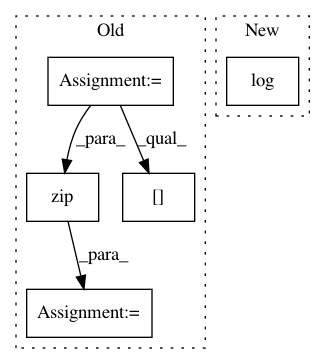

4f3da275037d4fe3108039fdbfc03b2f81fbee8c,dipy/reconst/dti.py,,ols_fit_tensor,#Any#Any#,1251
Before Change
tol = 1e-6
data = np.asarray(data)
data_flat = data.reshape((-1, data.shape[-1]))
evals = np.empty((len(data_flat), 3))
evecs = np.empty((len(data_flat), 3, 3))
dti_params = np.empty((len(data_flat), 4, 3))
//obtain OLS fitting matrix
//U,S,V = np.linalg.svd(design_matrix, False)
//math: beta_ols = inv(X.T*X)*X.T*y
//math: ols_fit = X*beta_ols*inv(y)
//ols_fit = np.dot(U, U.T)
min_diffusivity = tol / -design_matrix.min()
inv_design = np.linalg.pinv(design_matrix)
for param, sig in zip(dti_params, data_flat):
param[0], param[1:] = _ols_iter(inv_design, sig, min_diffusivity)
dti_params.shape = data.shape[:-1] + (12,)
dti_params = dti_params
return dti_params
After Change
from_lower_triangular(
np.einsum("...ij,...j",
np.linalg.pinv(design_matrix),
np.log(np.asarray(data)))
),
min_diffusivity=tol / -design_matrix.min()
)
In pattern: SUPERPATTERN
Frequency: 3
Non-data size: 5
Instances
Project Name: nipy/dipy
Commit Name: 4f3da275037d4fe3108039fdbfc03b2f81fbee8c
Time: 2015-10-15
Author: dimrozakis@gmail.com
File Name: dipy/reconst/dti.py
Class Name:
Method Name: ols_fit_tensor
Project Name: gboeing/osmnx
Commit Name: b2be440a78c9da841c3f1bdfa34e5dc0dc1e669c
Time: 2020-11-19
Author: boeing@usc.edu
File Name: osmnx/utils_graph.py
Class Name:
Method Name: _update_edge_keys
Project Name: gboeing/osmnx
Commit Name: d7b2db3c5262c82c44958afc2500efe0838f0884
Time: 2020-12-02
Author: boeing@usc.edu
File Name: osmnx/utils_graph.py
Class Name:
Method Name: _update_edge_keys